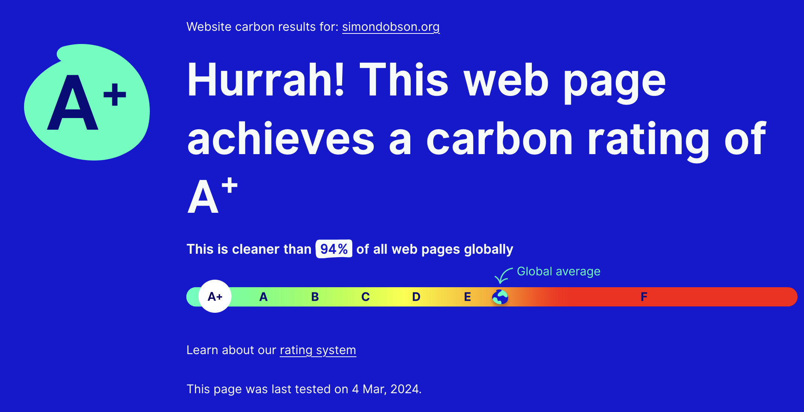

TIL: Web site carbon ratings
Today I learned about a site that rates web pages according to their carbon footprints.
My web site does well:

I’m not all that surprised by this, since I use a static site generator and minimal (almost no) JavaScript: basically as low-power as one could get.
The full report includes an approximate carbon cost per page visit (60mg), and even tries to work out the underlying energy provision, dirty or renewable – dirty in my case at the moment, unfortunately. (I’m currently hosted on GitHub.) I should perhaps take the hint and move onto an alternative provider, or even host it myself with a solar-powered Raspberry Pi. Low-tech Magazine does this, but they are based in Barcelona rather than Scotland…
You can even include a badge that reports your rating “live”:
(It caches so as to only make one request per day.) On the other hand this increases the JavaScript footprint slightly, so I don’t think I’ll be using it anywhere apart from just here.